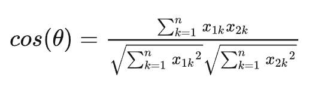
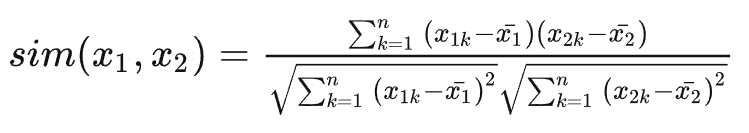
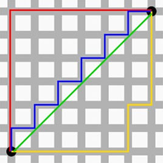

Machine Learning Engineer (Ads) Interview Questions
A Guide to Pass the MLE interview.
1 协同过滤
当用户A需要个性化推荐的时候，可以先找到和他兴趣详细的用户集群G，然后把G喜欢的并且A没有的物品推荐给A，这就是基于用户的协同过滤。
根据上述原理，我们可以将算法分为两个步骤：
找到与目标兴趣相似的用户集群
找到这个集合中用户喜欢的、并且目标用户没有听说过的物品推荐给目标用户。
2 相似度度量方法
下面，简单的举例几个机器学习中常用的样本相似性度量方法：
2.1 欧式距离（Euclidean Distance）
两个向量间距离
2.2 余弦相似度（Cosine）
夹角越小，余弦值越接近于1，反之则趋于-1

和欧式距离的区别
dataA = np.mat([1,2,3,3,2,1])
dataB = np.mat([2,3,4,4,3,2])
print(EuclideanDistance(dataA,dataB)) # 0.28
print(Cosine(dataA,dataB)) # 0.99对比以上的结果的 dataA 与 dataB 这两组数据，会发现 dataA 与 dataB 的欧式距离相似度比较小，而夹角余弦相似度比较大，即夹角余弦更能反映两者之间的变动趋势，两者有很高的变化趋势相似度，而欧式距离较大是因为两者数值有很大的区别，即两者拥有很高的数值差异。
2.3 皮尔逊相关系数（Pearson）
皮尔逊相关系数公式实际上就是在计算夹角余弦之前将两个向量减去各个样本的平均值，达到中心化的目的。 皮尔逊相关系数解决了欧氏距离和余弦相似度对变量取值范围敏感的问题。
比如：X和Y两个用户对两个内容的评分分别为（1,2）和（4,5），使用余弦相似度得到的结果是0.98，两者极为相似。但从评分上看X似乎不喜欢2这个 内容，而Y则比较喜欢，余弦相似度对数值的不敏感导致了结果的误差，需要修正这种不合理性。

2.4 汉明距离（Hamming Distance）
汉明距离表示的是两个字符串（相同长度）对应位不同的数量。比如有两个等长的字符串 str1 = “11111” 和 str2 = “10001” 那么它们之间的汉明距离就是3（这样说就简单多了吧。哈哈）。汉明距离多用于图像像素的匹配（同图搜索）。
2.5 曼哈顿距离（Manhattan Distance）
想象你在曼哈顿要从一个十字路口开车到另外一个十字路口，那么驾驶的最近距离并不是直线距离，因为你不可能横穿房屋。所以，曼哈顿距离表示的就是你的实际驾驶距离，即两个点在标准坐标系上的绝对轴距总和。

3 场景题
- 在携程酒店推荐场景下，可以用哪些指标衡量两家酒店的相似度
- 如何判断两个行为序列相似